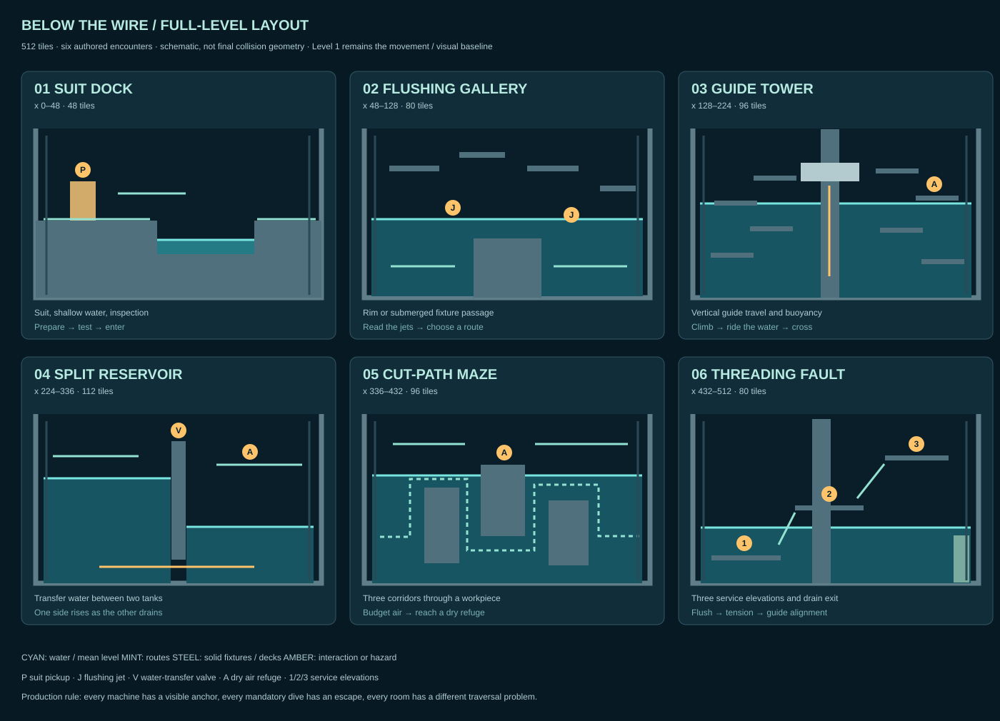
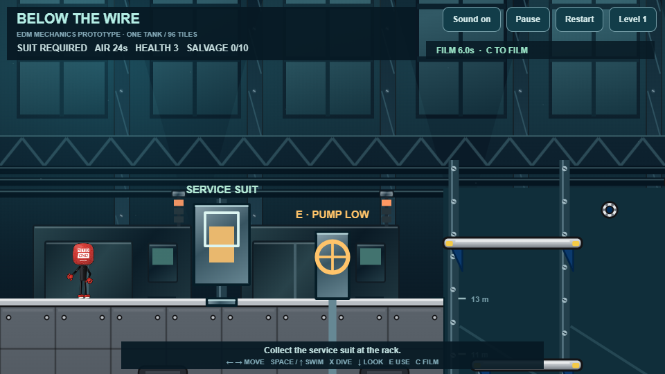
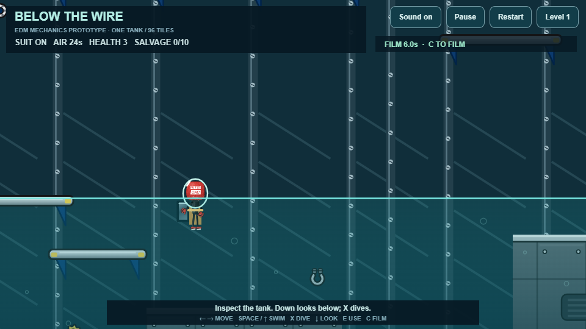
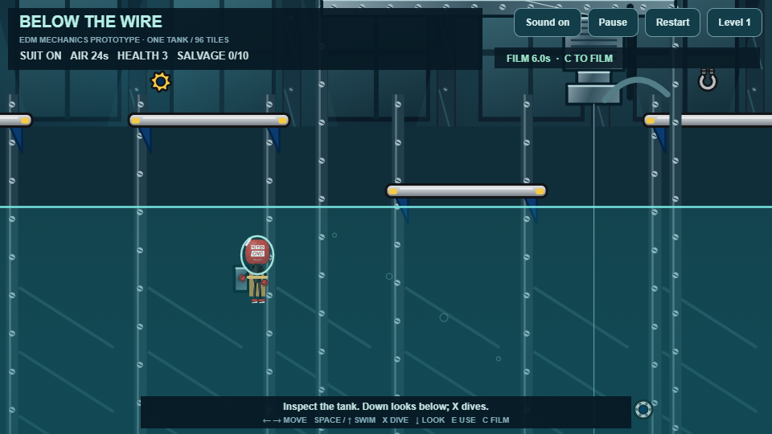
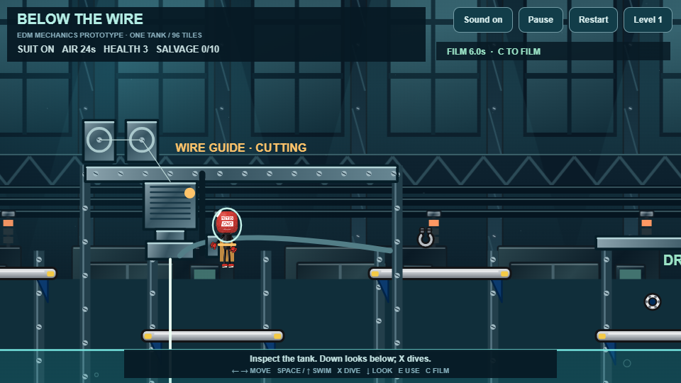
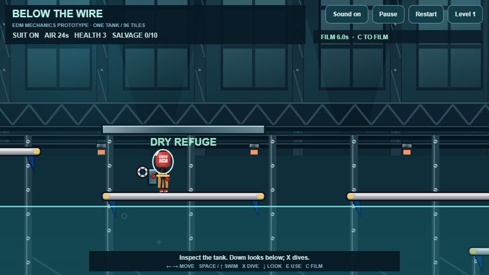
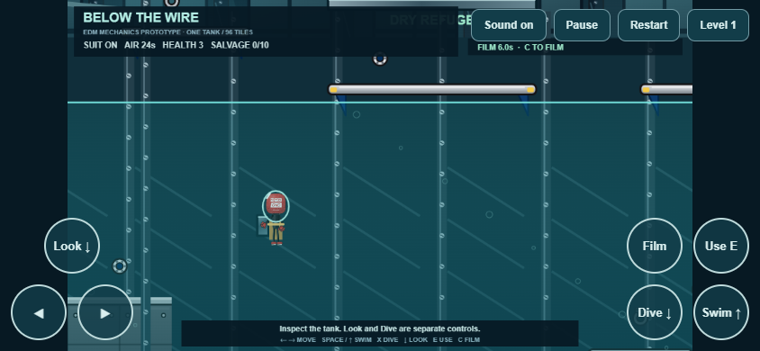

MIKE THE MIC / LEVEL 2 DESIGN / 29 SEPTEMBER 2026BELOW THE WIRE
A flooded wire-EDM enclosure, six authored rooms and three intersecting route types. Preserve the current Level 1's art, movement, camera, challenge and variety. Add fluid-state choices, a service suit and readable underwater machinery.
This is a 96-tile mechanics slice with ten sample collectibles. The six-room, 512-tile campaign level is a design. Final difficulty, the EDM boss, checkpoint integration and the full salvage collection remain to be built and playtested. Level 1 is preserved. No paid generation has been used.
The level layout

The schematic defines encounter roles and route connections. It is not a final collision map. The design document specifies dimensions, mechanics, checkpoints, escape rules and test criteria.
Working prototype

Suit dock and pump control
Low fluid: fixtures and lower route
High fluid: buoyant traversal
Anchored guide, wire and carriage
Dry refuge above the water
Touch controls: Look and Dive are separateImplementation state
| Working now | Next production pass |
|---|
| Original puppet, Level 1 backdrop, terrain, scale, dry physics, camera resource, short voice library | Campaign transition, checkpoints, full score/milestone UI and target-device profiling |
| Suit pickup, swim/dive, buoyancy, interpolated water, dry air refill, independent inspection control | Two-tank water transfer, submerged route tuning and suit/swim pose polish |
| Anchored tank and travelling guide, live wire tell, collision fixtures, both routes, exit interaction | Flushing jets, intake pulses, varied workpieces and multi-stage EDM boss |
Verification
Pure mechanics checks cover dry-physics parity, suit gating, valve edge triggering, water interpolation, buoyancy, fixtures, breathing/refill, recovery, guide timing and repair cancellation. Ordinary-input tests complete both dry and wet routes without recovery resets. These are mechanics checks, not evidence of final human difficulty balance.
Mechanics results · Browser and touch results
LOCAL PROTOTYPE · NOT DEPLOYED · CURRENT LEVEL 1 PRESERVED